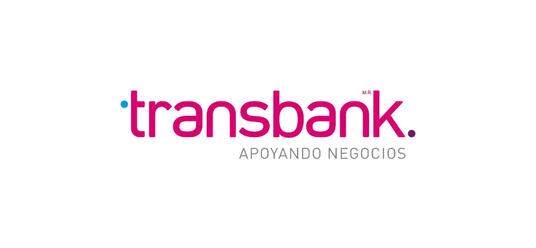

Transbank
| Cristian Marín | |
| Integraciones | |
| Francisco Ramirez |
💡
Propósito: “Configuración y uso para integración con terminal Transbank para conciliación de pagos con TRM”.
1. Descripción
Este documento trata acerca de la configuración y uso de la configuración de Transbank, dando paso al proceso de payments para TRM con este dispositivo. Esta integración actualmente funciona en modo atención en Caja, levantando pagos al terminal desde un PDV y cómo Selfservice, para tótems (kiosco).
2. Alcance
Este documento debe aplicarse para clientes que necesiten la integración con el terminal Transbank
3. Entrada
Este proceso debe realizarlo el cliente directamente teniendo los datos y el terminal correspondiente.
4. Condiciones
Se debe tener en consideración:
- Lo debe realizar el perfil dueño/creador
- El terminal debe ser modelo A920 Pro.
- La configuración es exclusiva para TRM New.
5. Procedimiento configuración de la integración
Paso 1: Activación forma de pago.
- Activar la forma de pago "Transbank" desde Menú lateral > Restaurante > Ajustes generales > Formas de pago.
- Selecciona la forma de pago ‘Transbank’ y confirmar.

- Grabar la forma de pago en el ícono superior.

{kind=link}
Paso 2: Activación integración.
- Ir al módulo de la integración en Menú lateral > Integraciones > Transbank.

- Para activar la integración necesitas los datos solicitados y agregar el terminal correspondiente:
• ID de sucursal (Proporcionado por Transbank)
• Puedes agregar la cantidad de terminales que necesites
• Debes ser perfil Dueño/Creador

- Luego de grabar, para verificar la conexión de la máquina, puede hacer click en el botón naranja de Impresión de prueba y se imprimirá el comprobante


6. Opciones de integración
Caja terminal
Asociar terminal a caja toteat
- Ir al menú → Restaurantes → Cajas → Agregar Caja / ir al lápiz de edición
/image%2010.png)
- Aquí asociar el terminal correspondiente en el parámetro “Terminales Transbank”


- Confirmar y grabar los cambios
Kiosco / Totem
Asociar terminal a la configuración del kiosco
/image%207.png)
/image%208.png)

7. Ejemplos de integración
Ejemplo de uso en kiosco
8. Salida
- Se configura y utiliza correctamente la integración con Transbank
- Realizar impresión de prueba
- Realizar pago de prueba
9. Paso a paso entregable
Paso a paso en PDF para enviar al cliente
https://docs.google.com/document/d/1xBC7GlwLXzJ3s5UsfuzgwieNa5zUpwgKFTUhCZrwIjY/edit?usp=sharing (Doc en drive para modificar PDF)
10. Control actualizaciones
| Fecha actualización | Actualizado Por | Aprobado Por | Versión |
|---|---|---|---|
| 27-11-2025 | @Cristian Marín |